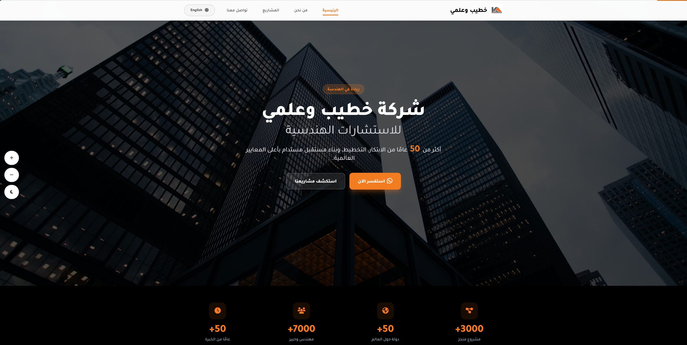
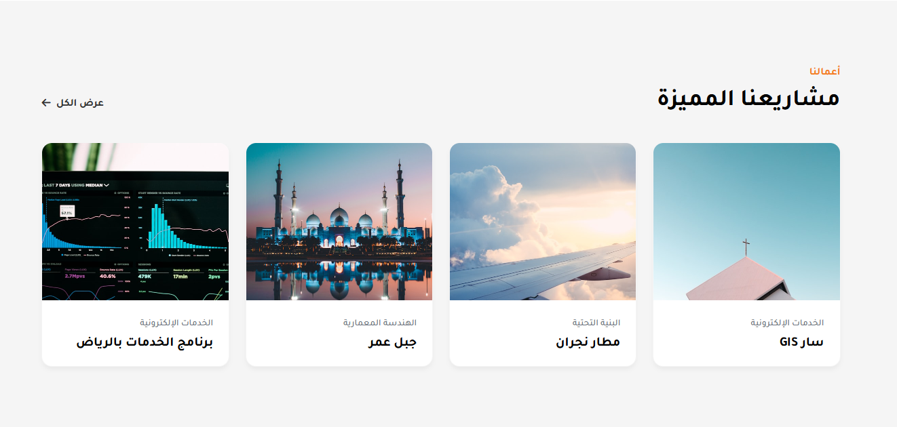

Case Study — Corporate Website Redesign
Khatib & Alami
Rebuilding first-impression credibility for one of the region's largest engineering and architecture firms — a strategic redesign of its corporate website, delivered as a fully interactive proof-of-concept.
- Role
- Lead HCI Specialist
- Context
- Proposed, pitched & team-led during internship
- Scope
- UX strategy · IA · Visual system
- Deliverable
- Interactive demo on GitHub Pages
- UX/UI Redesign
- Heuristic Evaluation
- Competitive Analysis
- Information Architecture
- Visual Design

01 — Executive Summary
A holistic UX transformation.
Khatib & Alami has spent over five decades shaping landmark infrastructure across the region — including design development and supervision on Dubai's Cayan Tower, the world's tallest twisted tower at its completion. Yet its corporate website communicated none of that authority. During my internship, I identified the gap between the firm's real-world stature and its digital first impression, proposed a full redesign on my own initiative, pitched the idea to stakeholders, and led the team to redesign it.
The result is a modernized, highly practical, and frictionless corporate website that elevates the holistic user experience. While building client trust was a primary goal, the redesign fundamentally transformed the entire user journey through persuasive and behavioral design principles. The legacy site severely violated Hick’s Law by overwhelming users with fragmented, org-chart-driven choices — forcing them to parse between ‘Who We Are’, ‘What We Do’, ‘Our CEO’, ‘Our Board of Directors’, and ‘Our People’. We eliminated this cognitive overload by compressing the navigation into a clear, intuitive path of four purposeful destinations (unifying all corporate context seamlessly under ‘About Us’).
Beyond structural navigation, we replaced a dead-end homepage with a five-section storytelling scroll for a modern, practical presentation. To champion inclusive design (Inclusivity), we integrated dedicated UI controls — specifically Dark Mode and dynamic, gradual scaling for all website elements (zooming the entire interface proportionally, not just text) — ensuring a universally adaptable experience for all users.
Business value in one line: A holistic UX transformation that delivers a modern, inclusive, and persuasive corporate journey, instantly building client trust before a conversation ever begins.
02 — The Problem
A monumental firm, undersold by its own site.
Upon my initial review of the firm's previous website, I immediately recognized that it squandered its true value and standing. I noticed its architecture was built around the organization's internal logic rather than the visitor's decision-making process. I brought these preliminary insights to my team, and through collaborative discussion and evaluation, we pinpointed four compounding problems that drove our redesign strategy:
- Navigation that mirrored the org chart, not the visitor's questions. We found that the primary menu carried eleven top-level items. Worse yet, the “Employee Area” button was given exaggerated visual prominence (highlighted) and framed in the most prominent slot on the interface, creating distraction and cognitive overload. Furthermore, we observed that the pages and menu items for “leadership biographies” consumed a structural footprint far exceeding that allocated to showcasing the firm's actual services and capabilities, reflecting a focus on administrative hierarchy rather than customer value.
- A homepage that was a dead end. We noticed that the entire page consisted of a full-screen image slider with no scrollable content beneath it. A visitor who did not immediately dive into the eleven-item menu had nowhere else to go: no narrative, no proof, and no clear pathway. The slider itself cycled through roughly a dozen slides whose only control was the row of tiny pagination dots — no arrows, no swipe — and it even rotated internal staff tributes in among flagship projects: the same inward-facing logic as the navigation, replayed in the firm's most valuable customer-facing space.
- A hero that never said what the firm does. The slider opened on a striking Dubai skyline accompanied by a low-contrast caption — “The World's Tallest Twisted Tower – 2014”. Impressive raw material, but fatally framed: visitors were shown a building before being told this firm engineers buildings like this. We found no value proposition and no call to action (CTA) anywhere on the page.
- Eroded perceived quality. The site featured a dated visual language, which we felt quietly contradicted the firm's exceptional engineering excellence and its regional and global standing. The slider made this tangible: its broken cross-fade left each outgoing slide lingering semi-transparently over the next — text ghosting over text, portraits dissolving into skylines — a visible malfunction within a visitor's first ten seconds. Users judge trustworthiness and stature substantially based on visual design quality — and they do it in under a second.


03 — The Process
Diagnose with evidence, not opinion.
Heuristic evaluation. Building on my initial review, I led the team through a structured evaluation against Nielsen's ten usability heuristics, documenting each violation and its severity. We identified top-level labels that reflected internal org structure rather than visitor vocabulary (match between system and the real world); eleven competing options and a single-project hero (aesthetic and minimalist design); no persistent placement for the content that drives decisions (recognition rather than recall); and inconsistent typography and components (consistency and standards). The output was a prioritized defect map — a ranked inventory of friction, ordered by impact on trust formation.
Competitive & comparative analysis. We benchmarked leading global and regional engineering, architecture, and consulting firms to map the category conventions visitors expect (capability-first homepages, sector-based wayfinding, project-led storytelling), the trust toolkit top firms deploy (quantified scale, hero imagery of built work used as evidence), and the differentiation gap: even the region's top-tier firms publish English-first corporate sites, and none pairs a modern, credibility-first experience with Arabic-first presentation — an Arabic-first redesign wouldn't just reach parity; it would occupy an empty position.
Information architecture restructuring. We audited the existing content and weighed every item against the redesign's goals: building decision-maker trust, yes — but equally a better overall experience, with clearer navigation, behavioral design that guides intent, and inclusivity as a baseline. We collapsed the eleven-item menu into four intent-driven destinations — Home, About, Projects, Contact — plus a clean language switcher; merged leadership content into About; removed the Employee Area from the public journey entirely; and reconceived the standalone “360° Perspective” item — whose name promised far more than the article-style page it opened — as genuinely immersive content within the story. We then transformed the homepage into a scrollable journey of five well-paced sections governed by progressive disclosure and a deliberate narrative arc: Capability → Proof → Contact.
Our findings converged on three principles that governed every subsequent decision: clarity, credibility, and hierarchy.
Heuristic Evaluation — Consolidated Defect Map
Four HCI-trained evaluators · ordered by heuristic · severity per Nielsen's 0–4 scale
-
#1 — Visibility of system status
2 · MinorThe slider gives no meaningful indication of position or count — faint dots aside, visitors cannot tell where they are in the rotation or what remains.
-
#2 — Match between system & the real world
3 · MajorNavigation speaks the organization's internal language — “Our CEO”, “Our Board of Directors”, “Our People” as separate destinations — and internal staff tributes rotate among flagship projects in the hero.
-
#3 — User control & freedom
3 · MajorThe auto-rotating slider's only control is a row of tiny pagination dots — no arrows, no swipe, no pause. Control technically exists but is nearly undiscoverable and a difficult touch target.
-
#4 — Consistency & standards
4 · CatastrophicBroken slider cross-fade: outgoing slides linger semi-transparently over incoming ones — captions ghost over captions, imagery dissolves into imagery — a visible malfunction within the visitor's first seconds.
-
#5 — Error prevention
0 · No issueA brochure-style site with virtually no interactive input: no forms, no configurable flows — no meaningful opportunity for user error. Evaluated; no violations recorded.
-
#6 — Recognition rather than recall
3 · MajorNo persistent, predictable placement for the content that drives decisions — services, sectors, proof, contact. Visitors must memorize an eleven-item menu to find anything.
-
#7 — Flexibility & efficiency of use
3 · MajorNo shortcut to the highest-value task: no inquiry or contact call-to-action anywhere on the homepage or “Who We Are” — the path to a conversation is left to the visitor to invent.
-
#8 — Aesthetic & minimalist design
3 · MajorEleven top-level menu items compete for attention — with the internal “Employee Area” tool visually highlighted in the most prominent slot — while the homepage offers zero scannable content beneath the slider.
-
#8 — Aesthetic & minimalist design
3 · Major“Who We Are”: dense white paragraphs set over busy, semi-transparent photography; headings floated over faint wireframe art — low contrast and heavy cognitive load throughout.
-
#9 — Help users recognize, diagnose & recover from errors
0 · No issueNo transactional flows or form submissions on the audited pages; error states are effectively absent. Evaluated; no violations recorded.
-
#10 — Help & documentation
0 · No issueBrochure content is self-describing and requires no task documentation; contact details are reachable, if buried. Evaluated; no violations recorded.
-
Supplement — WCAG accessibility review (outside Nielsen's ten)
3 · MajorAcross the site, entire pages of content — including the firm's sixty-year history — are delivered as raster images rather than text: illegible on mobile, invisible to screen readers, and unindexable by search engines.
All ten heuristics were evaluated; no findings were recorded at severity 1 (cosmetic).
The consolidated defect map — the evidence base behind the redesign strategy.
04 — Design Decisions
Every choice, in service of trust.
An identity-first hero. We replaced the project-caption banner with a structured statement of identity: a positioning badge (ريادة في الهندسة — “Leadership in Engineering”), the firm's name and discipline in a confident display scale, and one quantified proof line — 50+ years of innovation and planning, the number accented in brand orange so the eye cannot miss the firm's strongest credential. Within seconds, a visitor can now answer both questions the legacy site left open: what does this firm do, and can I trust them?
Persuasion architecture — Fogg's Behavior Model. A qualified inquiry happens when motivation, ability, and a prompt converge — so we engineered all three. Motivation: we front-loaded proof — the 50-year credential in the hero, a floating experience badge in About, flagship projects on the homepage. Ability: we made the path to any answer short and obvious with a four-item IA and scannable sections. Prompt: we designed a two-tier call to action matched to visitor readiness — a primary WhatsApp “Inquire Now” (استفسر الآن), deliberately the lowest-friction, culturally native business channel in the region, and a secondary “Explore Our Projects” (استكشف مشاريعنا) for visitors who need more proof first. High-intent and still-evaluating visitors each get a next step; the legacy site gave neither one.
The storytelling scroll. Where the legacy homepage ended at the slider, we paced the redesign as a narrative in five sections: the hero flows into an asymmetric About section — editorial headline set against an elevated workplace photograph anchored by the floating “+50 years of experience” stat badge — then a card-based Featured Projects grid that chunks the portfolio into scannable units. Midway down, we deliberately inverted the palette: a dark-themed 360° VR section creates a visual break that resets attention exactly where scroll fatigue would set in, before the journey closes in a structured multi-column footer. Progressive disclosure, applied to visual rhythm as much as content depth.
Proof as wayfinding. We presented the featured projects — Jabal Omar, Najran Airport, the Riyadh services program, SAR GIS — as sector-labeled cards (architecture, infrastructure, e-services), doing double duty as evidence of scale and navigational scent. We also rebuilt the legacy site's most misleading feature: its “360° Perspective” page promised immersion but delivered static, text-heavy articles with ordinary photography — the name was a metaphor. We made it literal: immersive 360° walkthroughs of real venues, with explicit play affordances, embedded in the homepage story. Without VR production equipment, we prototyped this resourcefully — selecting venues with existing Google Maps 360° indoor coverage and embedding those panoramas — so a stakeholder can walk through a building as if standing inside it, at zero production cost.
Accessibility and localization as baseline. We designed Arabic-first, with native RTL typography and a one-click English switcher — matching the firm's primary market rather than defaulting to English. We added a floating inclusive-design widget that travels with the user — gradual, proportional zoom of the entire interface and dark-mode controls — alongside WCAG-aligned contrast and fully responsive layouts. We retained the brand orange from the firm's existing logo: modernizing the identity without severing recognition.

05 — The Outcome
A working proof-of-concept, not a promise.
We developed the concept into a fully interactive, high-fidelity demo hosted on GitHub Pages — a working proof-of-concept rather than static mockups. It validates the complete strategy end-to-end: the four-item information architecture, the capability-proof-contact journey, the bilingual RTL experience, and the premium visual system, all experienced as a real, navigable product.
- It makes the strategic argument tangible — stakeholders don't have to imagine the redesign; they can click through it, switch languages, and toggle dark mode.
- It demonstrates end-to-end ownership — from identifying the problem unprompted, through the pitch, to a shipped interactive artifact.
- It establishes the baseline for validation — the natural next step is moderated usability testing and first-click / time-to-information measurement against the legacy site, for which the demo serves as the test artifact.
This project sharpened a conviction I bring to every engagement: in professional services, the interface is the first proof of competence a client ever sees. The legacy site owned extraordinary raw material — the world's tallest twisted tower was literally on its homepage — and still failed to convert it into trust, because credibility is not what you show; it's what the visitor can effortlessly understand.
Next case study
Midan — Talent Management Platform →